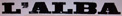

Il Montone è il favorito assoluto di questo Palio con la fortissima Stella ed il rientrante Nappa, determinato a vincere. La Selva ha di nuovo in sorte Calabresella, il Leocorno conferma Pioviscola su Gobba.
L'Oca concede fiducia al debuttante Rombois e cede Picino all'Istrice, alla terza prova però il fantino di Ronciglione si infortuna e viene sostituito dal vecchio Tabarre. La Lupa monta Pallino e gira Il Rosso alla Selva che scarica Martellino.
La mossa è molto confusa, l'Istrice cade al canape, parte prima l'Onda, con il rientrante Fulmine, seguono Oca, Lupa, Montone e Leocorno.
A San Martino l'Onda è sempre al comando, Pallino prende in consegna Rombois e lo porta ai materassi. Nelle retrovie Tartuca e Chiocciola si nerbano violentemente, con Testina che non lascia tregua a Chiccone.
Il Montone ha un guizzo e prende la testa davanti al Palco delle Comparse per non mollarla più. Il Palio non ha più storia, Nappa conquista la sua terza vittoria, precedendo l'Onda. Cappotto personale per il barbero Stella.
Dopo trentotto presenze, abbandona il mondo del Palio Francesco Ceppatelli detto "Tabarre", fantino di Volterra, uno dei grandi protagonisti di fine ottocento con le sue dieci vittorie conquistate su sole quindici carriere disputate dal luglio 1888 al luglio 1895, una media di successi da record.
(Da "Daccelo!" di Roberto Filiani)





|